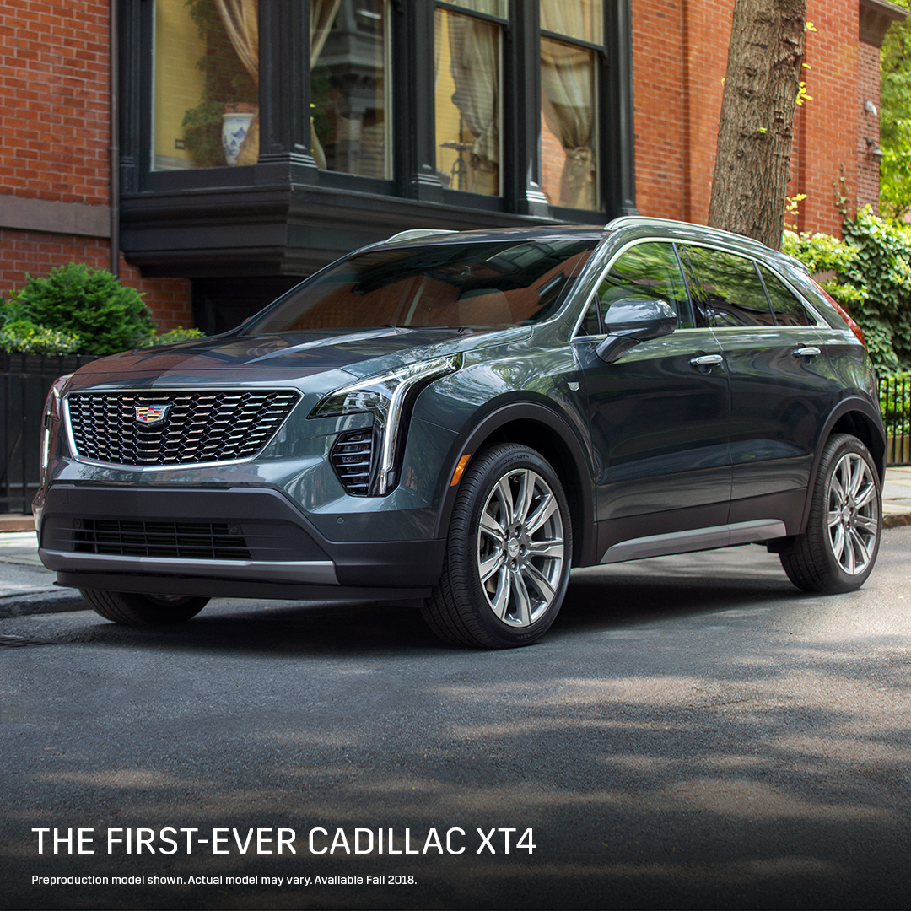
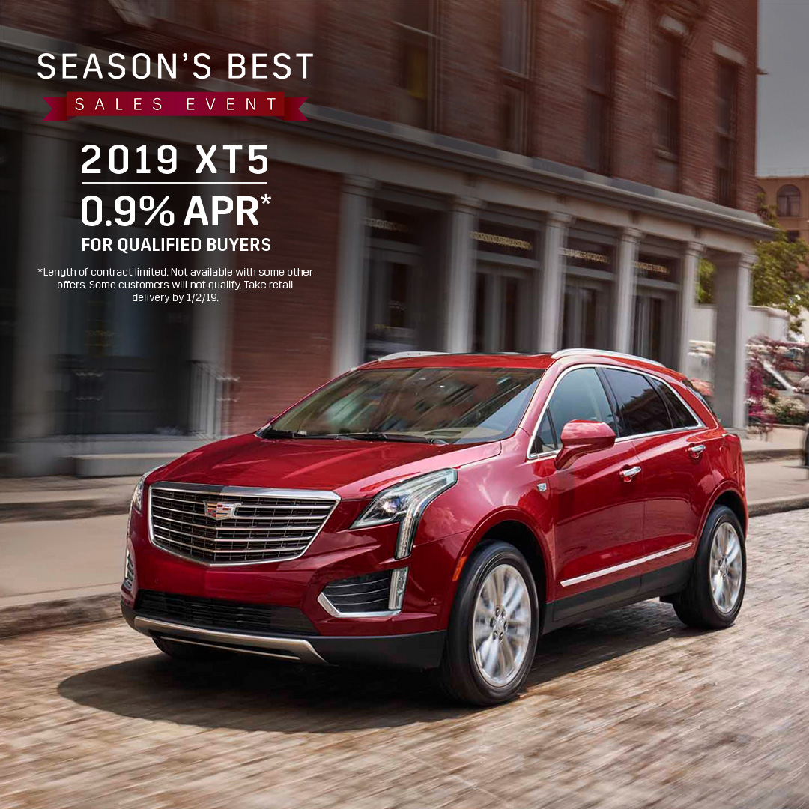

Enter your zip code to locate
your closest participating Cadillac Dealer

The First Ever Cadillac XT4 crossover
- An all-new turbocharged engine delivers 237 hp and 258 lb-ft of torque
- The luxurious interior features available massaging front seats with heat and ventilation for a more relaxing drive
- The available Safety Alert Seat sends a discreet pulse to the left, right or both sides of the driver’s seat, indicating the direction of the potential danger
- Available automatic braking systems can help in potential collision situations by automatically applying the brakes if the driver has not already done so
- A thoughtfully created interior provides segment-leading rear leg room and knee clearance for backseat passengers

Cadillac XT5 crossover
- With 310 hp and 271 lb-ft of torque the 3.6L V6 engine is powerful, but that’s not the whole story. Innovative technologies like Active Fuel Management and Auto Stop/Start make it efficient, too
- The available UltraView® Power Sunroof spans both seating rows, providing every passenger a clear view of the sky.
- The available Hands-Free Liftgate opens and closes with a simple kicking gesture
- Available Lane Keep Assist with Lane Departure Warning helps you stay in your driving lane.
- Rear Camera Mirror streams rear-facing HD video that expands to provide a wider, less obstructed rear field of view than a traditional rear-view mirror.